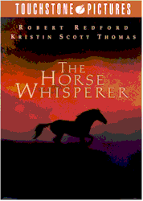
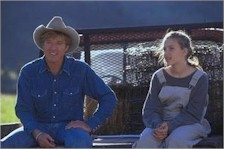
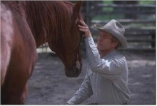

Contents | Features | Reviews | News | Archives | Store |
 |
|
| Movie Credits | Buy It! |
The Horse Whisperer
Review by Carrie
Gorringe
Posted 15 May 1998
|  | Directed by Robert Redford Starring
Robert Redford, Kristen Scott Thomas, Screenplay by Eric Roth and Richard LaGravenese, |
Annie MacLean (Thomas) is looking for only one good man, and she has to go outside her home in order to find him. Happily married to lawyer Robert (Neill), Annie faces a crisis when her only child, Grace (Johnasson), is injured in a horse-riding accident. Not only has Grace’s best friend been killed in the mishap, and Grace’s right leg been amputated, but Grace’s beloved horse, Pilgrim, has been so badly injured that he is destined for the great stable in the sky. In the rarefied atmosphere in which Annie, Robert and Grace live, every problem disappears in direct proportion to the amount of money that you are willing to throw at it. Annie learns of a so-called "horse whisperer," a combination animal psychiatrist and shaman, who is reputed to be the best at bringing wounded animals back from their emotional impasses. He is named Tom Booker (Redford), lives in splendid seclusion in Montana, and is not interested in Annie’s seemingly superfluous problems. Annie, not understanding any part of Tom’s declaration of "no," arrives at Booker’s ranch, with Grace and Gulliver in tow. Pretty soon, the horse whisperer and the forceful city lady begin whispering sweet somethings to each other under the guise of treating daughter and horse. Tom’s brother (Cooper) and sister-in-law (Wiest) are the first to spot the growing problem, but hubby Robert appears on the scene just as the two would-be lovers are on the verge of abandonment. What transpires next is the classic dilemma of duty versus desire, and the ability to distinguish which path is the right one to take when one’s emotions have completely occluded one’s judgement.
Screenwriters Roth and LaGravenese go straight for the heartstrings in their adaptation of Evans’ novel. Several comparisons have been made between this film and the film version of The Bridges of Madison County. It’s a tempting parallel to draw, since LaGravenese adapted Bridges for Clint Eastwood. Instead, Horse Whisperer aspires to a comparison with the granddaddy of all tearjerkers aspiring to a literary pedigree: David Lean’s version of Noel Coward’s play, Brief Encounter. Both films contain the theme of nice people caught up in an impossible romance despite themselves, and share similarities right down to the metaphoric level, most notably the use of classical music as a trope for lost love (although the selection here comes from Dvorak as opposed to Rachmaninoff, but let’s not quibble over differences in composers). The most obvious evidence that Roth and LaGravenese have borrowed from Coward and Lean has to do with the ending of the film versus the ending in Evans’ novel; the former has been altered so significantly that, inadvertently or not, the comparison between Horse Whisperer and Brief Encounter the films is unavoidable. Take away the striking, if derivative, visual composition and Horse Whisperer could be defined, at its most elemental, in the same disdainful, dismissive context to which love stories are often confined: as nothing more than a pricey two-Kleenex-box weeper of nearly three hours duration. Digging into the subtext of either film or novel, one finds no deeper themes, such as man versus nature; they exist only on the surface, as a pretentious cosmetic gloss meant to elevate the proceedings above that of the average potboiler, and betraying the filmmakers’ unease with their task at hand. Their own disdain for the third category of conflict – man versus himself – not to mention their own disdain for those who hunger after such tales well told, shines through their surface gloss and turns everything into dross of the most cynical sort
Despite the best intentions of Thomas and Redford, our would-be lovers do nothing to inspire great passion in the audience, primarily because they can’t seem to convey a convincing mutual passion. The fault doesn’t lie with Thomas; she projects such self-reliance and radiance that her appearances often threaten to break through the artificiality of the script. Redford is the weak link; there’s too much of an aw-shucks mentality in his portrayal of Tom Booker; you might ask him to shoe your horse, but not to sweep you up upon it. Cooper and Wiest, in supporting roles that are unworthy of their profound talents, serve only to provide the necessary local color; likewise for Neill. The real revelation here is Scarlett Johannsen. So marvelous in Manny and Lo, she fills one of the two emotional centers of this film with such empathy that you actually can relate to her crisis; she glows as much as Thomas, but that glow can’t shine far through a fog of mediocrity. As for this reviewer, I’ll stick with Trevor Howard and Celia Johnson in that cold, lonely train station.
Contents | Features | Reviews | News | Archives | Store
Copyright © 1999 by Nitrate Productions, Inc. All Rights Reserved.